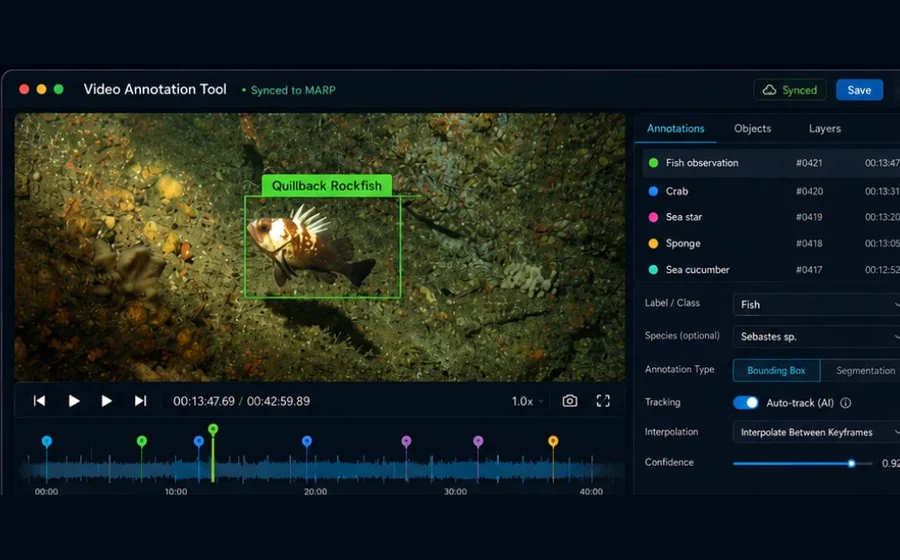
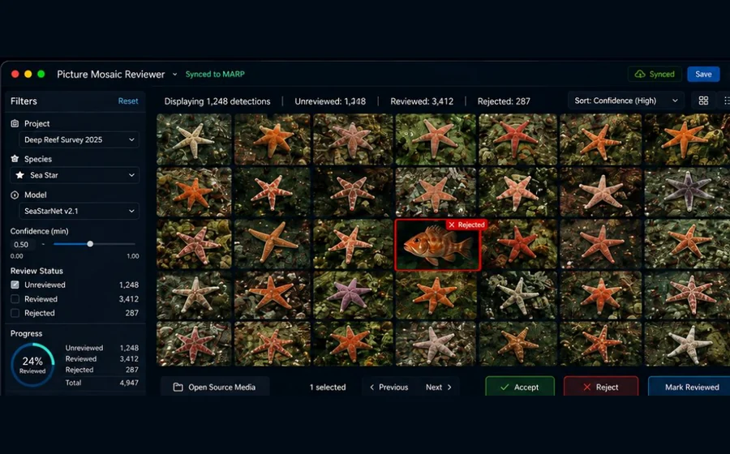
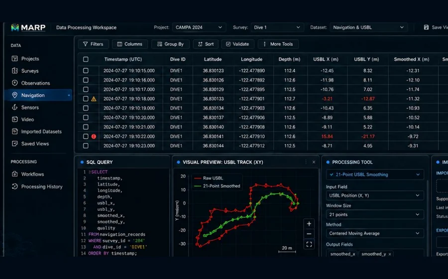
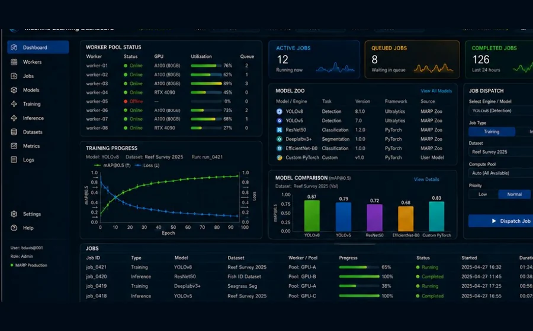
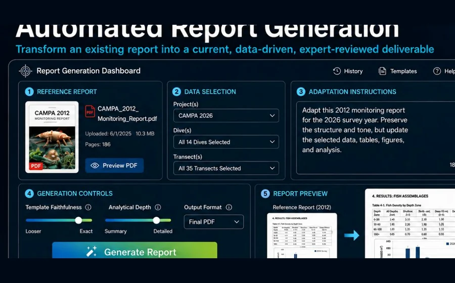

Marine Analysis and Reporting Platform
MARP is a self-hosted platform for ecological data, expert interpretation, video workflows, machine-learning assistance, processing pipelines, and reporting.
|
|
From observation to understanding.
MARP connects ecological observations, expert judgment, video, data processing, machine learning, and reporting through one shared platform.
MARP is currently an internal production platform under active development. The long-term goal is a system-wide API and application ecosystem that organizations can host for their own ecological data workflows.
Contents
- Why MARP
- Platform workflow
- What this repository contains
- Architecture
- Frontend applications
- Routes
- Getting started
- Configuration
- Database migrations and seeds
- Documentation
- Hosting
- Contributing
- Current constraints
- Roadmap
- SQL and maintenance notes
- License
Why MARP
Ecological analysis is not one task. It is a connected workflow involving field collection, video review, expert interpretation, data cleaning, machine-learning support, reporting, and long-term stewardship.
MARP brings those activities together behind a shared API, common data model, and reusable service layer.
The platform is designed around a simple principle:
Biologists lead. MARP amplifies.
Machine learning and automation reduce repetitive work, but biological interpretation, validation, and scientific judgment remain with experts.
Platform workflow
| Collect | Review | Process | Assist | Deliver |
|---|---|---|---|---|
| Ecological observations, ROV surveys, sensors, imagery, and video | Expert interpretation, annotation, and validation | Cleaning, transformation, measurement, and analysis | Machine-learning inference, tracking, classification, and training | Reports, maps, visualizations, exports, and partner-ready data products |
Core platform capabilities
- Ecological data — projects, surveys, sessions, observations, species, and associated records
- Video and imagery — source media, exact frames, keyframes, evidence, and review workflows
- Expert review — biologist-led interpretation and quality assurance
- Data processing — validation, transformation, spatial processing, and reproducible workflows
- Machine learning — dataset generation, inference, training, model management, and distributed workers
- Reporting — verified outputs, automated report generation, visualizations, and exports
What this repository contains
This repository combines the MARP API and the static frontend applications currently served by the same Node.js process.
- Express API for MARP data, sessions, observations, users, projects, species, keyframes, tasks, and machine-learning dataset workflows
- Static frontend applications served by the Node server
- OpenAPI generation and Swagger UI for API consumers
- Developer documentation generated with JSDoc
- Sequelize models, migrations, and seeders for PostgreSQL
- Reporting routes, report views, and data-product support
- Shared frontend assets, partials, and application-specific interfaces
Architecture
MARP uses a layered backend with static frontend applications served by Express.
Browser / MARP application
│
▼
Express server
│
┌────────┼─────────┐
│ │ │
Frontend API Documentation
routes routes routes
│
▼
Controllers
│
▼
Services / domain logic
│
▼
Repositories
│
▼
Sequelize models
│
▼
PostgreSQL
Runtime layers
- HTTP server —
server.jsinitializes Express, middleware, static serving, API routes, and documentation routes. - Controllers — request handling and endpoint orchestration.
- Services and repositories — business logic and data-access boundaries.
- Models — Sequelize model registry and associations.
- PostgreSQL — primary persistence layer.
- Frontend applications — static applications served directly by Express.
Primary directories
| Directory | Purpose |
|---|---|
controller |
HTTP-level API handlers |
service |
Business and domain orchestration |
repository |
Data access |
model |
Sequelize models and database wiring |
migrations |
Versioned schema changes |
seeders |
Baseline and sample data |
reporting |
Report-specific API routes |
frontend |
Static MARP applications and shared assets |
docs |
Generated OpenAPI and developer documentation |
Frontend applications
The frontend is organized as static applications with shared assets.
frontend/
├── apps/
│ ├── entry/
│ └── dashboard/
└── shared/
├── partials/
└── assets/
Entry application
frontend/apps/entry
The public-facing MARP entry experience communicates the platform narrative:
- One shared platform backed by a common API and data model
- Workflow stages: Collect, Review, Process, Assist, Deliver
- Capability areas: ecological data, video and imagery, expert review, processing, machine learning, and reporting
- Responsive navigation and landing-page sections
- Accessible prototype login dialog
- Animated interface accents and section transitions
The current login interface is an interaction prototype. It does not perform production authentication.
Dashboard application
frontend/apps/dashboard
The dashboard currently includes:
- Overview page with KPI cards, charts, maps, filters, and recent-transect tables
- User activity report at
/apps/dashboard/user-activity.html - User hours report at
/apps/dashboard/user-hours.html - Demo-oriented visualization scaffolding alongside production-like API calls
Shared frontend shell
frontend/shared
Shared resources include:
- Header and footer partials
- Shared CSS and JavaScript
- Partial injection through
frontend/shared/assets/js/partials.js - Shared image and icon assets
Application concepts
These interfaces show the major application categories MARP is intended to support.





| Application | Purpose |
|---|---|
| Video Annotation Tool | Frame-accurate ecological annotation with expert and machine-learning-assisted review |
| Picture Mosaic Reviewer | Rapid high-volume review of detections and imagery |
| Data Processing Workspace | Cleaning, validation, transformation, visualization, and reproducible processing |
| Machine Learning Dashboard | Models, jobs, inference, training, workers, metrics, and operational visibility |
| Automated Report Generation | Expert-reviewed reports and data products assembled from verified MARP data |
Routes
Frontend routes
| Route | Purpose |
|---|---|
/ |
Serves frontend/apps/entry/index.html |
/apps/:appName |
Serves frontend/apps/:appName/index.html when present |
/apps/* |
Static assets under frontend/apps |
/shared/* |
Shared assets and partials |
/assets/* |
Compatibility alias to frontend/shared/assets |
Compatibility redirects
| Legacy route | Current route |
|---|---|
/dashboard1.html |
/apps/dashboard/ |
/userActivity.html |
/apps/dashboard/user-activity.html |
/userHours.html |
/apps/dashboard/user-hours.html |
Documentation routes
| Route | Purpose |
|---|---|
/api-docs |
Swagger UI |
/api/openapi.json |
Generated OpenAPI JSON |
/openapi.json |
Compatibility route for generated OpenAPI JSON |
/developer-docs |
Generated JSDoc developer documentation |
API namespace
All backend endpoints are served under:
/api/*
Unknown API routes should return a JSON 404. Unknown non-API routes should return the normal application 404.
Getting started
Prerequisites
- Node.js
- npm
- PostgreSQL
- A configured environment file
Install dependencies
npm install
Start development mode
npm run dev
Start normally
npm start
The server uses PORT when provided and otherwise falls back to port 3000.
After startup, the main local routes are typically:
http://localhost:3000/
http://localhost:3000/api-docs
http://localhost:3000/developer-docs
Configuration
Keep local credentials in .env and never commit that file.
A typical development configuration uses standard database variables such as:
NODE_ENV=development
PORT=3000
DB_HOST=localhost
DB_PORT=5432
DB_NAME=mare_development
DB_USER=mare_user
DB_PASS=replace-with-a-local-password
DB_DIALECT=postgres
Additional variables may be required by optional integrations or deployment environments. Confirm the exact names against the project configuration modules before deploying.
Recommended repository files:
.env Local secrets; ignored by Git
.env.example Safe variable names and example values
Do not place production passwords, API keys, session secrets, or external-service credentials in the README.
Database migrations and seeds
MARP uses Sequelize CLI for schema migrations and seed data.
Run all migrations
npx sequelize-cli db:migrate
Run a specific migration
npx sequelize-cli db:migrate --name 20241111192533-create-keyframes-table.js
Undo all migrations
npx sequelize-cli db:migrate:undo:all
Undo one migration
npx sequelize-cli db:migrate:undo --name 20241111192533-create-keyframes-table.js
Create a migration
npx sequelize-cli migration:create --name create-keyframes-table
Generate a seed file
npx sequelize-cli seed:generate --name seed_observation_pobsid
Run all seeds
npx sequelize-cli db:seed:all
Run one seed
npx sequelize-cli db:seed --seed 20231106192725-seed_observation_pobsid
Undo the most recent seed
npx sequelize-cli db:seed:undo
Documentation
MARP generates API documentation from source annotations and developer documentation from JSDoc.
Build OpenAPI documentation
npm run docs:api:build
Build developer documentation
npm run docs:dev:build
Build all documentation
npm run docs:build
When changing an endpoint:
- Keep the OpenAPI annotation consistent with actual behavior.
- Update JSDoc where the public or developer contract changes.
- Rebuild the documentation.
- Verify
/api-docs,/api/openapi.json, and/developer-docs.
Schema field note template
For every OpenAPI schema property, include notes that make the field usable without reading backend code.
Required property metadata:
description- What the field means in domain terms.example- A realistic sample value.nullable- Present whennullis allowed.format- Present when type semantics matter (date-time,float, etc.).
Use additional constraints when known:
enumfor controlled values.minimumandmaximumfor numeric ranges.readOnlyfor response-only fields (for example IDs generated by the database).
If a field has context-dependent semantics, document that caveat directly in the field description rather than leaving it implicit.
Hosting
MARP is intended to be self-hosted by organizations that operate their own ecological data infrastructure.
A deployment requires:
- A supported Node.js runtime
- PostgreSQL
- Environment variables and credentials
- Persistent database storage
- Access to any configured media, processing, or external services
The application can be started directly with Node.js or managed by a process manager.
npm start
Optional PM2 example:
pm2 start server.js --name marp
A reverse proxy may be used when required by an organization's networking, TLS, or routing environment, but it is not a MARP application requirement.
Production deployments should also define:
- Backup and recovery procedures
- Log retention
- Database migration procedures
- Credential rotation
- Network-access controls
- Monitoring and restart behavior
- HTTPS termination where the application is exposed beyond a trusted network
Contributing
MARP development should remain modular, documented, and reviewable.
Recommended workflow
- Create a focused branch from the appropriate development branch.
- Keep each change limited to one feature, fix, or architectural concern.
- Follow the existing controller, service, repository, and model boundaries.
- Use relative
/api/...paths from frontend code. - Do not introduce hard-coded hosts, credentials, or machine-specific paths.
- Update OpenAPI and JSDoc when behavior changes.
- Add or update migrations for schema changes.
- Verify affected frontend routes and API endpoints.
- Run available tests, linting, and documentation builds.
- Open a pull request describing what changed, why it changed, how it was verified, and any migration or deployment impact.
Code expectations
- Prefer clear, maintainable code over clever shortcuts.
- Comment architectural intent and non-obvious behavior.
- Keep request handling, business logic, and persistence concerns separated.
- Preserve API compatibility unless a versioned change is intentional.
- Do not commit
.env, credentials, generated secrets, database exports, or private ecological data.
Documentation expectations
A change is not complete when the code works but the public contract is inaccurate. Update the relevant documentation whenever routes, schemas, setup, or operational behavior changes.
Current constraints
- The entry-page login is prototype-only and is intentionally not connected to authentication services.
- Dashboard pages currently mix production-like endpoints with demo visualization scaffolding.
- Legacy HTML pages under
htmlare compatibility-era artifacts. - The active served frontend is under
frontend/apps. - MARP is an internal production platform that is still being expanded into a system-wide API and application platform.
- There is not yet one public, centrally hosted MARP service; organizations are expected to host their own deployments.
Roadmap
Current high-value improvements include:
- Add a definitive
.env.examplewith every required variable. - Add environment-specific deployment documentation without coupling the project to one server stack.
- Promote dashboard prototypes into formally versioned frontend applications with tests.
- Move report SQL view definitions into versioned migration scripts.
- Expand automated testing for API contracts, data access, and frontend behavior.
- Connect the entry-page login interface to production authentication and authorization.
- Continue evolving MARP into a stable shared API for applications, workers, reports, and partner integrations.
SQL and maintenance notes
The following material is retained as a working reference for report views, maintenance operations, and training-data queries. These notes should gradually be converted into versioned migrations, scripts, or dedicated technical documentation.
Related tables and report views
Related tables
observationssessionsprojectsuserskeyframes
Report and view tables
observations_report: observations, sessions, projects, usershabitat_report: observations, sessions, projects, usersMarineDebris_report: observations, sessions, projects, usersSubstrate60Second_report: observations, sessions, projects, users
View: observations_report
SELECT
projects.name AS "Project Name",
users.name AS "Processor Name",
sessions.type AS "Session Type",
observations.observation_id,
observations."obsID",
sessions.session_id AS "Session Number",
observations."taxReview",
observations.taxserial,
observations.comname,
observations.count,
observations.coarsesize,
observations.sex,
observations.tc,
observations.etc,
sessions.dive,
sessions.line,
sessions."lineId",
observations.note,
observations."updatedAt",
observations.video_source,
observations."videoLocation",
observations."mediaPosition",
observations."actualPosition"
FROM observations, projects, sessions, users
WHERE sessions.user_id = users.user_id
AND sessions.session_id = observations.session_id
AND sessions.project_id = projects.project_id
ORDER BY sessions.session_id, observations."obsID";
View: habitat_report
DROP VIEW habitat_report;
CREATE VIEW habitat_report AS
SELECT
projects.name AS "Project Name",
users.name AS "Processor Name",
sessions.type AS "Session Type",
observations.observation_id,
observations."obsID",
observations."PobsID",
sessions.session_id AS "Session Number",
observations.comname AS "Substrate",
observations.coarsesize AS "PCTcover",
observations.tc,
observations.etc,
sessions.dive,
sessions.line,
sessions."lineId",
observations.note,
observations."updatedAt",
observations.video_source,
observations."videoLocation",
observations."mediaPosition",
observations."actualPosition"
FROM observations, projects, sessions, users
WHERE sessions.user_id = users.user_id
AND sessions.session_id = observations.session_id
AND sessions.project_id = projects.project_id
AND sessions.type::text = 'Habitat'::text
ORDER BY sessions.session_id, observations."obsID";
View: MarineDebris_report
DROP VIEW MarineDebris_report;
CREATE VIEW MarineDebris_report AS
SELECT
projects.name AS "Project Name",
users.name AS "Processor Name",
sessions.type AS "Session Type",
observations.observation_id,
observations."obsID",
observations."PobsID",
sessions.session_id AS "Session Number",
observations.tc,
observations.etc,
observations.frame,
observations.comname,
observations.taxserial,
observations.count,
observations."taxReview",
observations.note
FROM observations, projects, sessions, users
WHERE sessions.user_id = users.user_id
AND sessions.session_id = observations.session_id
AND sessions.project_id = projects.project_id
AND sessions.type::text = 'MarineDebris'::text
ORDER BY sessions.session_id, observations."obsID";
View: Substrate60Second_report
DROP VIEW Substrate60Second_report;
CREATE VIEW Substrate60Second_report AS
SELECT
projects.name AS "Project Name",
users.name AS "Processor Name",
sessions.type AS "Session Type",
observations.observation_id,
observations."obsID",
observations."PobsID",
sessions.session_id AS "Session Number",
observations.tc,
observations.comname AS "Substrate",
observations.substrate_bedrock AS "Bedrock",
observations.substrate_megaclast AS "Megaclast",
observations.substrate_cobble AS "Cobble",
observations.substrate_boulder AS "Boulder",
observations.substrate_pebble AS "Pebble",
observations.substrate_granule AS "Granule",
observations.substrate_sand AS "Sand",
observations.substrate_mud AS "Mud",
observations.substrate_coral_reef AS "Coral Reef",
observations.substrate_coral_rubble AS "Coral Rubble",
observations.substrate_shell_hash AS "Shell Hash",
observations.substrate_shell_rubble AS "Shell Rubble",
observations.substrate_algal AS "Algal",
sessions.dive,
sessions.line,
sessions."lineId",
observations.note,
observations."updatedAt",
observations.video_source,
observations."videoLocation",
observations."mediaPosition",
observations."actualPosition"
FROM observations, projects, sessions, users
WHERE sessions.user_id = users.user_id
AND sessions.session_id = observations.session_id
AND sessions.project_id = projects.project_id
AND sessions.type::text = 'Substrate60Second'::text
ORDER BY sessions.session_id, observations."obsID";
View maintenance: observations_report
DROP VIEW public.observations_report;
CREATE OR REPLACE VIEW public.observations_report AS
SELECT
projects.name AS "Project Name",
users.name AS "Processor Name",
sessions.type AS "Session Type",
observations.observation_id,
observations."obsID",
observations."PobsID",
sessions.session_id AS "Session Number",
observations."taxReview",
observations.taxserial,
observations.comname,
observations.count,
observations.coarsesize,
observations.sex,
observations.tc,
observations.etc,
sessions.dive,
sessions.line,
sessions."lineId",
observations.note,
observations."updatedAt",
observations.video_source,
observations."videoLocation",
observations."mediaPosition",
observations."actualPosition"
FROM observations, projects, sessions, users
WHERE sessions.user_id = users.user_id
AND sessions.session_id = observations.session_id
AND sessions.project_id = projects.project_id
ORDER BY sessions.session_id, observations."obsID";
Query: rebuild PobsID per project order
WITH ranked_observations AS (
SELECT
observations.observation_id,
sessions.project_id,
ROW_NUMBER() OVER (
PARTITION BY sessions.project_id
ORDER BY sessions.project_id, sessions.session_id, observations.observation_id
) AS row_num
FROM observations
JOIN sessions ON observations.session_id = sessions.session_id
JOIN projects ON sessions.project_id = projects.project_id
)
UPDATE observations
SET "PobsID" = ranked_observations.row_num
FROM ranked_observations
WHERE observations.observation_id = ranked_observations.observation_id;
Query: training-data species frame summary
SELECT
o."comname",
COUNT(DISTINCT o."observation_id") AS observation_count,
COUNT(DISTINCT o."video_source") AS video_count,
SUM(k_end."framenum" - k_start."framenum") AS total_frames,
AVG(k_end."framenum" - k_start."framenum") AS avg_frames_per_observation
FROM public."observations" AS o
JOIN public."keyframes" AS k_start
ON k_start."observation_id" = o."observation_id"
AND k_start."type" = 'start'
JOIN public."keyframes" AS k_end
ON k_end."observation_id" = o."observation_id"
AND k_end."type" = 'end'
WHERE o."note" = 'R'
GROUP BY o."comname"
ORDER BY total_frames DESC;
Sample result snapshot:
comname | observation_count | video_count | total_frames | avg_frames_per_observation
--------------------------+-------------------+-------------+--------------+-----------------------------
White-plumed anemone | 343 | 3 | 191831 | 73.7527873894655902
California sea cucumber | 449 | 6 | 30283 | 56.3929236499068901
Fish-eating anemone | 285 | 5 | 29953 | 88.8813056379821958
Red sea urchin | 137 | 3 | 15493 | 60.7568627450980392
Red sea star | 105 | 4 | 6985 | 63.5000000000000000
Bat star | 84 | 2 | 5484 | 60.9333333333333333
Short red gorgonian | 55 | 2 | 3478 | 59.9655172413793103
Leather star | 31 | 3 | 3211 | 78.3170731707317073
Cookie star | 51 | 5 | 2852 | 55.9215686274509804
UI Henricia | 32 | 5 | 2481 | 72.9705882352941176
Sand-rose anemone | 11 | 2 | 1147 | 81.9285714285714286
Fish eating star | 14 | 2 | 1067 | 76.2142857142857143
Red gorgonian | 4 | 1 | 501 | 125.2500000000000000
Bat Star | 4 | 1 | 244 | 61.0000000000000000
Short spined sea star | 1 | 1 | 154 | 154.0000000000000000
UI sea star | 2 | 1 | 104 | 52.0000000000000000
Thorny sea star | 1 | 1 | 35 | 35.0000000000000000
Scratch notes
Previous PostgreSQL connection pattern:
psql -d mare_development -U mare_user
Previous PobsID reset sequence:
ALTER TABLE observations DROP COLUMN "PobsID";
ALTER TABLE observations ADD COLUMN "PobsID" integer;
License
This project is currently licensed under the MIT License.

Explore. Inform. Protect.